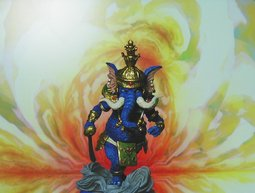

メガテン 第二集 ガネーシャ

コトブキヤ 真・女神転生 悪魔召喚録 第二集のガネーシャ様です。象といえば灰色ですが、これは青くて皴々のガネーシャ様です。シワシワなのはマガマガしいのですが、それが渋くてカッコイイです。 インドといえば、かけ算を覚えるとき 9 × 9 ではなく、20 × 20 を覚えるそうです。筆算をやるときは、1-9 と 0 を知っていればいいのに、なぜ、それ以外も覚えるのか私は不思議に思っていました。 手と足の指の数は合わせれば 20 です。でも、かけ算ですから指で数えるわけではありません。それに本当はゼロがつきますから、20 + '0' = 21 (ブラックジャック) の数字を扱うことになります。 ちなみに子供のころ私が最初につまづいたのが 9 × 9 でした。7 の段がぜんぜん覚えられませんでした。かなり後(今も？)になるまで、筆算で 7 の段がでてくると、逆の段から計算して答えを出してました。7 × 6 がでてきたら、「6 × 7 = 42 だから 42 だ」といったふうに。 インド人は数学が得意と聞きます。10 以上 20 以下の計算ができることにそれほどのメリットがあるとは思えません。20 × 20 は頭のヨガのようなものなのでしょうか？ ガネーシャはインドでは一番人気のある神様だそうです。 《Wikipedia：ガネーシャ》によると、親のシヴァが首を切ってどこかに投げたあと、無実なのがわかって、探すとみつからない。しかたなく象の首を付けたんだそうです。 これまた不思議な話です。象の頭は西でみつかった開頭術で脳の皮質部分を除いたものを表したものなのか、象が出す低周波を用いた麻酔術か何かのたとえなのか、それとも宇宙論とか世界観とつながりがあるのか。犠牲をさし出すものに与えられる大いなるものとは理解不能であることを示すのか。ヒンドゥー教の奥深さは私なんかにはわからないです。 大乗仏教で出てくるアーラヤ識とかの話は、定理証明システムの隣接領域である人工知能を思わせる話があって興味深いものがあり、インド哲学にも惹かれるものはあるんですが、資料多過ぎ、私にはわけわからな過ぎです。 2006年5月になったビョーキではこのガネーシャ様がビビッときました。 ちょうどビョーキになったころに、家の２階の水道の蛇口の水漏れを直すよう家族から頼まれました。私は親戚の水道屋さんにちゃんと話して工具とかを借りないと高くつくと主張したのですが、親がホームセンターで、工具を 500 円以下で、新しい蛇口もかなり安く購入してきて、やってみると、自分でもできてしまいました。蛇口は象の鼻のようにクネクネまがります。 私が以前(2001年)のビョーキだったときも、蛇口の水漏れを直そうとして直せなかったことを思い出しました。 今回直したときはまだビョーキも残っていたので、これが、ガネーシャ様がこの時期私の手に入ったことのメッセージで「経絡」というか「因果律」はこれで繋ったんだなとか思ってしまいました。 背景は Winamp の MilkDrop プラグインを WinShot したものを GIMP で色調を反転したものです。 初公開：2006年07月01日 22:24:46 最新版：2006年07月01日 22:31:45
Trackbacks (2 件)
Trackbacks: 《gift card manufacturer》 from gift card manufacturer spa gift certificate business gift supplier uk easter gift homemade idea gift idea f... 受信： 2006-07-03 09:19:50 (JST) 《漢字の「馬」の象形文字はむしろ「棒馬(hobby horse)」では？》 from JRF の私見：雑記 漢字のもと、金文などに見られる「馬」の象形文字はとても「目」が大きい。書き方でわかりにくいが、よく見ると確かに今の「馬」にも「目」は含まれている。これがあの生きている馬を上か横から図示したものとはとても思えない。むしろ私にはおもちゃの馬すなわち「棒馬(hobby horse)」に見える。... 受信： 2012-09-23 04:51:19 (JST) Links: 真・女神転生 悪魔召喚録 第二集: http://www.kotobukiya.co.jp/kotobukiyashop/detail.msp?id=4077 Wikipedia：ガネーシャ: http://ja.wikipedia.org/wiki/%E3%82%AC%E3%83%8D%E3%83%BC%E3%82%B7%E3%83%A3 MilkDrop: http://www.milkdrop.co.uk/ WinShot: http://www.woodybells.com/winshot.html GIMP: http://www.gimp.org/
後方参照 (9 件)
- URL参照 学研『ヒンドゥー教の本』を読んだ。胎児のころの記憶から梵我一如が正しいという感覚… 2023年06月06日
- URL参照 『法華経』の現代語訳を読んだ。お経の第一に挙げる人もいるぐらいだから、他のお経や… 2020年08月06日
- URL参照 近況。物理を少しかじってみた。水野敬也『夢をかなえるゾウ』を読んだ。小林昌廣『病… 2015年06月22日
- URL参照 漢字の「馬」の象形文字はむしろ「棒馬(hobby horse)」では？ 2012年09月17日 18:51:27
- URL参照 我思うゆえにありうるのは我々までであって、我が自立して存在するとまではいえない。… 2010年05月29日
- URL参照 発生学的な脳の陰喩…。八方の玄義につらなる時間の覚悟があるとき、群盲象を評す的に… 2010年01月04日
- URL参照 無差別殺人というのは昔は、もっと、起きにくかった。それは異常な人が増えたから…で… 2009年07月25日
- URL参照 著作者に対する間接侵害者が投資を行うだけの利益をどうやって得るか？その鍵の一つが… 2009年06月24日
- URL参照 前期の翌日(2008-10-01)から昨日(2008-12-31)まで 92 日間のアクセス解析など 2009年01月01日 00:53:34